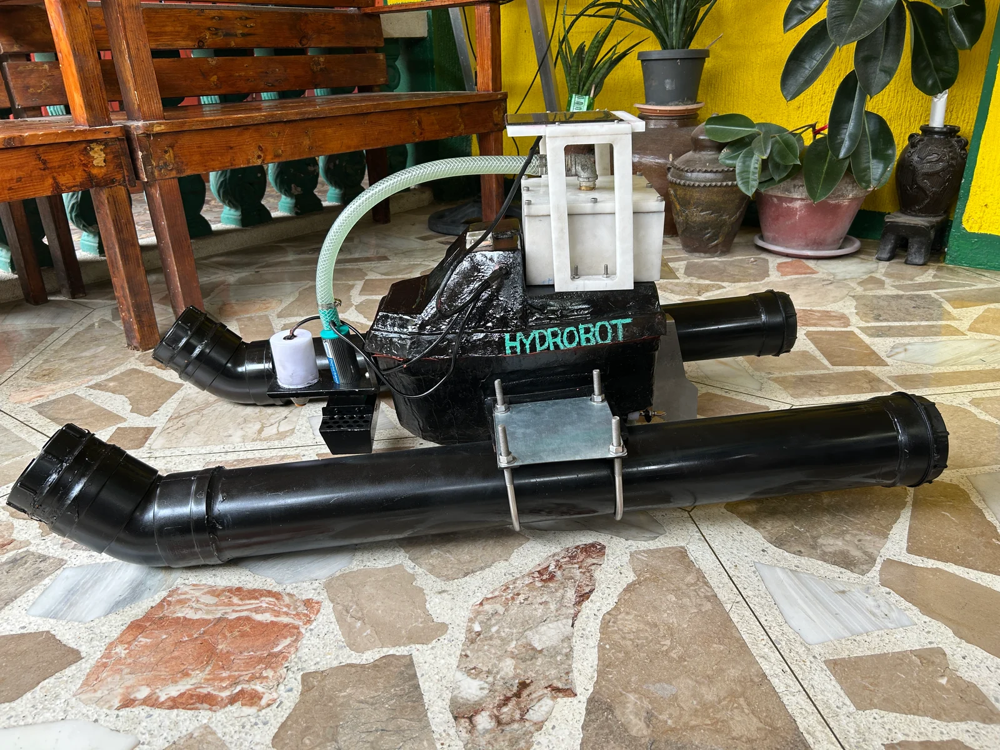

THE PHYSICAL BUILD
A working thesis prototype brings practical questions into focus: how components fit together, how they connect, and how to make the whole assembly function.
01 / THE HARDWARE · TEAM THESIS
An idea you can build.
A system you can put to work.

Hydrobot is the physical platform in our team's oil-spill detection and filtration thesis.
We designed and built an autonomous RC boat with an ESP32, GPS, and IMU, bringing embedded hardware and navigation into the project. A natural-fiber filtration system explored material ratios for oil absorption.
AquaDetect is the connected software side: a dashboard for telemetry, mapping, and detection results. Together, the two parts connect what happens in the physical system with what an operator can see on screen.
A working thesis prototype brings practical questions into focus: how components fit together, how they connect, and how to make the whole assembly function.
The ESP32, GPS, and IMU form the embedded foundation for the boat's navigation and telemetry within the thesis system.
The team engineered a natural-fiber filtration system and optimized material ratios for oil absorption efficiency.
Built as a team thesis. The photograph shows the real prototype; the portfolio does not simulate a live boat connection.